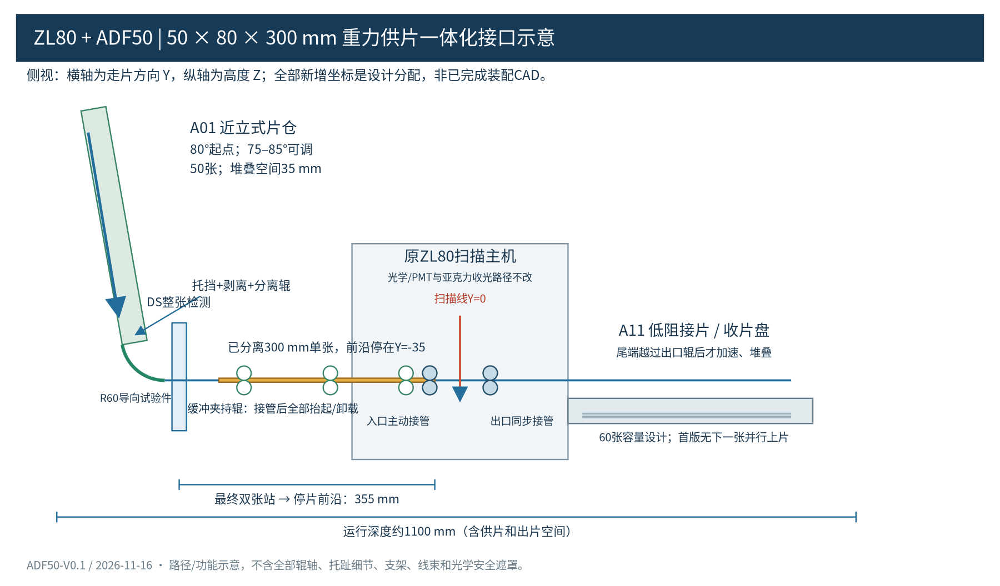

50张 × 80×300mm底片 · 重力辅助供片 · 静电与摩擦分离 · 2026-11-16

主参数 · 模块与空间 · 传感器I/O · DOE试验 · 风险与门槛
状态转换 · Python状态机 · 29项参考测试 · 来源
入口与出口扫描辊应能够主动接管，覆盖300mm散片首尾；分片/缓冲辊必须确认释放，不能只让电机停转。
末端双张站Y=-390到停片前沿Y=-35提供355mm路径，整张确认后才允许扫描。展开工作深度约1100mm是空间预算，不是已完成3D装配。